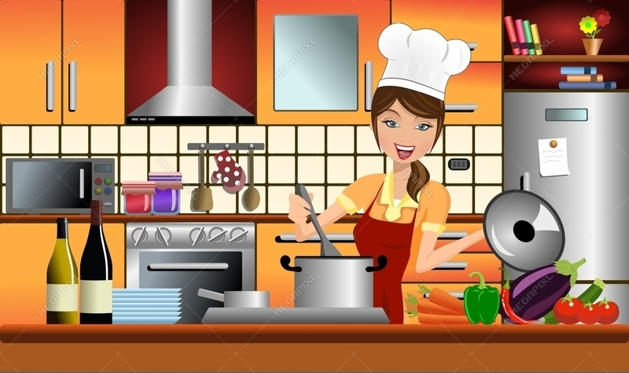

You can learn to cook too
Do activities you're passionate about - which make your heart and soul feel perky - including things like working out, cooking, painting, writing, yoga, hiking, walking, swimming, being in nature, being around art, or reading inspiring books.
Most people I know don’t really love to cook. For them, time spent in the kitchen is all about getting a meal on the table after a long day at the office and before — or between — soccer practices, swimming lessons, or any of an expanding variety of family obligations. That does not stop many of them from dreaming, however.
I hear a lot of true confessions about failed attempts at healthy home cooking. These are sad tales that usually begin with grand ambitions inspired by cooking shows and a delusional belief that preparing a meal should be a joyful pursuit. A typical scenario involves an aspiring, but slightly ambivalent, cook — let’s call her Ambie — who wants to improve her diet while having fun and being creative in the kitchen. So inspired, Ambie goes to the grocery store and fills her cart with unfamiliar but awesome-sounding stuff (quinoa! forbidden rice! kimchi sprouts!) and plunges into a “simple” recipe for a vegetarian chili that she stumbled upon while clicking through some hot new food blogs. It has a lot of different grains and beans and too much cumin, and the onion scraps stink up Ambie’s garbage. When she finally sits down to savor the fruits of all her labor, Ambie finds the chili to be mostly inedible — somehow both gummy and crunchy. She salvages it, such as she can, with a lot of grated cheese and salsa, and tries to put it out of her mind, even though the house smells powerfully of food she now hates. The next day, Ambie experiences a fresh and unexpected crisis at work and spends the next two evenings eating takeout burritos at her desk. By midweek she is home for dinner, exhausted, and still depressed about the leftover chili. She opens her refrigerator to find that the only produce that hasn’t wilted is a chunk of cabbage, and she wonders what she did in a previous life to deserve raw cabbage for dinner in this one. By Friday, Ambie has to go out for double cheeseburgers with her friends because she’ll do almost anything to avoid the smell of failure that now greets her every time she steps into her kitchen. Sound familiar?
Whenever I hear these stories, my instinct is to help those people find a way to make healthy meals more joyful. So here’s what I suggest: Start by sitting down with a pen and paper. Make a list of meals you actually love to eat — including stuff that isn’t particularly healthy. Once you complete your list, circle the dishes that are actually healthy. Is it a Greek salad? A roast chicken? An omelet with herbs and goat cheese? White-bean stew with kale and garlicky lamb sausage? If you wrote down unhealthy things, that’s fine. Just skip them for now.
At the start of the week, pick one of those meals you love, and buy all the stuff you need — and want — to make it as amazing as it can be. Let’s say it’s a Greek salad. With a fine red-wine vinegar, high-quality kalamata olives, fresh ground pepper, and some really good feta cheese, you can make a version that’s way better than what you’d get alongside takeout from the local pizza place. Consider this meal a gift to yourself, because you deserve nice dinners. Enjoy it to the utmost. Take a picture if you’re so inspired.
Next week, add another dish from your list. Maybe it’s a roast chicken and some baked sweet potatoes. Now you have two meals in your repertoire, and with all those kalamata olives and the red-wine vinegar in the house, making that second great Greek salad will be easy. In the following week, pull in a third dish from your list. Is it a crock pot of minestrone soup, bubbling with beans? There’s a lesson here: If you don’t cook, or haven’t yet, don’t dive into it with cooking as the focus of your efforts. Just do what makes you happy — make the food you love to eat. That, my friends, is the real joy of cooking!
If you’re thinking, This is not much more than the joy of planning, you are correct. But it’s also about cooking for the person you are today, the taste preferences you have today, and the smarts you most likely already possess about what’s good for you (vegetables, legumes, a modest amount of good organic meat) and what’s not so good (sugars, processed flours, and fats and oils that can’t be made without factories). You also have to do an honest reckoning about the time you have available to cook. When you sit down with your pen and paper, think about how many minutes and hours you can actually spare to prepare food on weeknights and weekends. Ambie is always trying to fit two-hour recipes into half-hour slots. She believes she should be able to make chicken cacciatore on a Thursday night after work because a TV chef — or some friend on Facebook — tells her it’s easy. If you routinely have a half hour to get dinner on the table for a family full of little kids, you might not want to try to cook hot entrées — for now.
Take some time on less busy weekends to cook triple batches of the dishes you all love that can be frozen (meatballs in sauce, minestrone soup, chicken stew, chili, taco fillings, or whatever you like), then simply thaw and reheat them on those jam-packed days. Warmed-up chicken soup, fruit and cheese, and a cut-up red pepper is a fine dinner for a 4-year-old on a weeknight. Slow and steady wins the race. If you start by cooking for the person you are, you’re much more likely to succeed than if you try to cook for — and be — the someone you’re not. The more I hear about people’s recurrent dilemmas, sad failures, and hopeless surrenders in the kitchen, the more I am convinced that misguided striving is a huge part of the problem. My real advice for Ambie, and everyone, is to focus on finding your own personal joy and tastes. That’s when cooking becomes a whole lot easier — and a lot more fun.